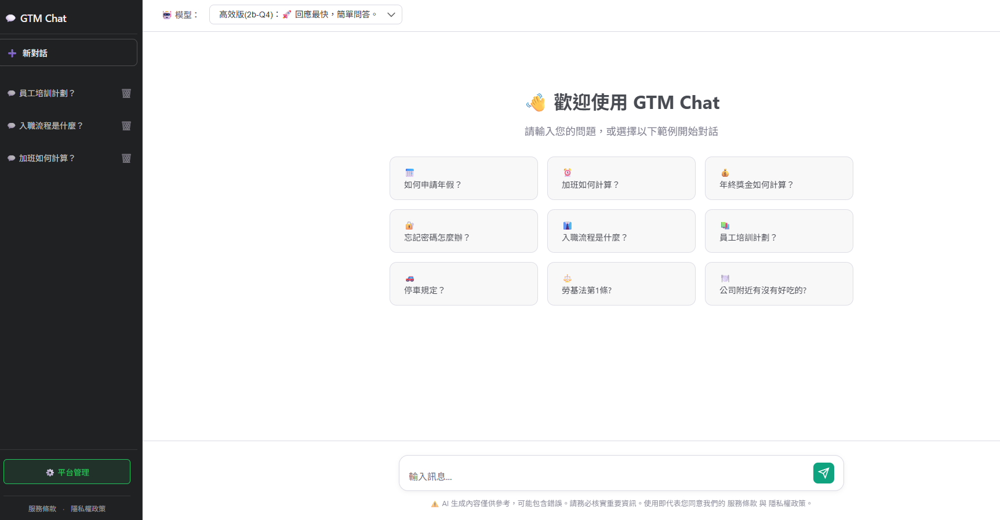
描述：結合 ASP.Net 與 LLM 模型，將複雜的人資、法規與技術規範轉化為即時問答服務。
Description: Combined ASP.Net with LLM models to transform complex HR and technical specs into an instant Q&A service.
Asp.Net Core, LLM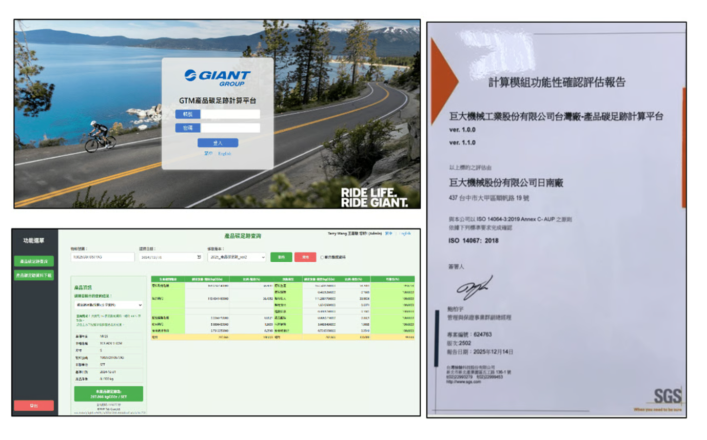
描述：整合 C#、Python 與 SQL Server 建構獲 SGS AUP 國際認證之自動化碳盤查平台。
Description: Integrated C#, Python, and SQL Server to build an SGS AUP certified automated carbon footprint calculation platform.
Asp.Net (C#), Python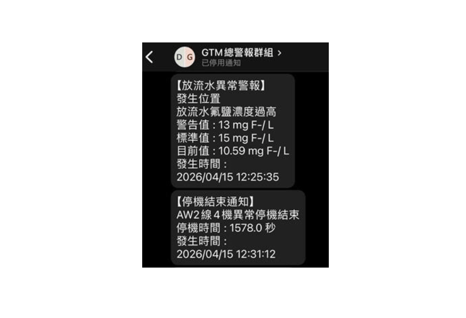
描述：針對生產機台與廠務設備進行即時數據採集與異常監控告警。
Description: Real-time data acquisition and anomaly monitoring alerts for production machines and facility equipment.
Python, IoT Integration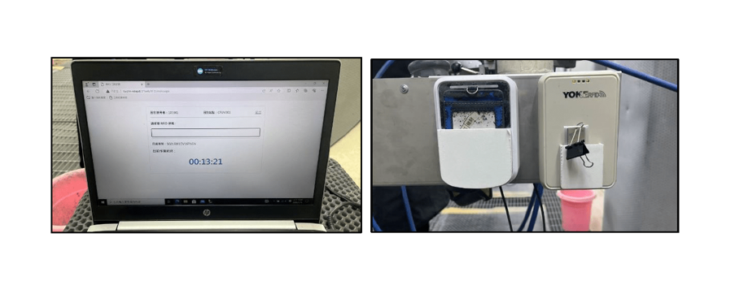
描述：結合 RFID 技術實現自動化工時紀錄與製程進度管控。
Description: Integrated RFID technology for automated working hour recording and process progress control.
Hardware Integration, C#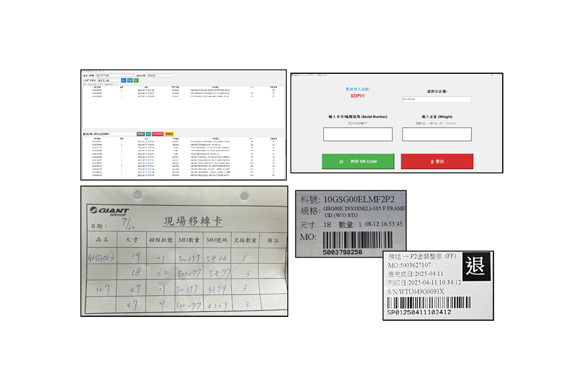
描述：應用條碼標籤取代傳統紙本，實現生產流程與物料移轉的全程數位追蹤。
Description: Replaced traditional paper tickets with barcode labels for full digital tracking of production workflows.
Raspberry Pi, API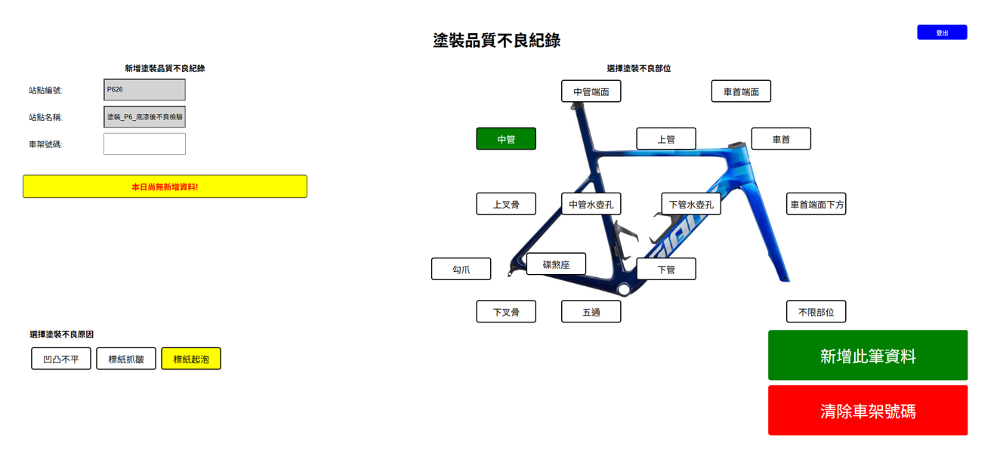
描述：為現場產線客製化開發之觸控螢幕/平板應用，快速登錄並分析塗裝不良數據。
Description: Touchscreen/tablet application customized for production lines to quickly record and analyze painting defects.
Web UI/UX, Touch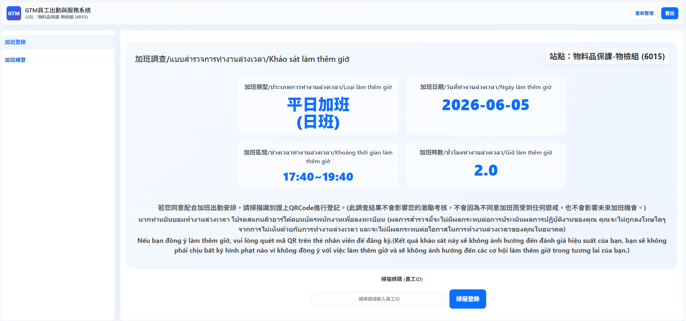
描述：針對美國 CBP 貿易風險開發具法律證據力之數據採集系統。
Description: Developed an evidentiary data collection system targeting US CBP trade compliance risks.
Asp.Net (C#), Digital Signatures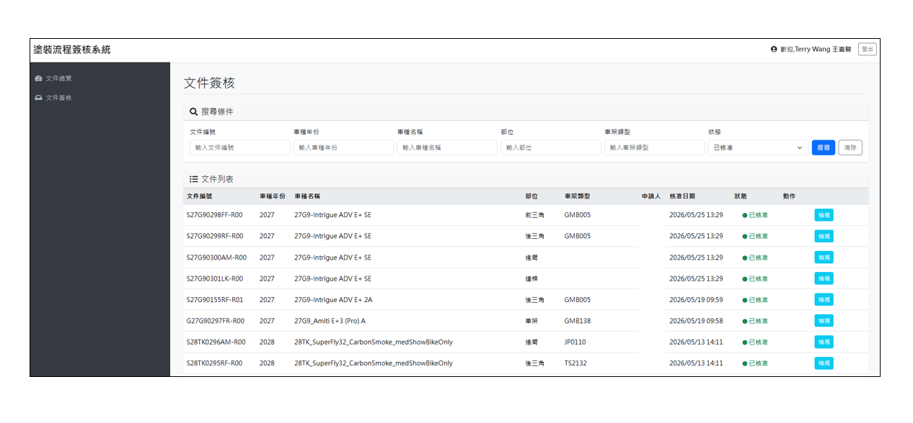
描述：將塗裝流程文件簽核數位化，並實現嚴格的版本控管與追蹤。
Description: Digitized Painting document approvals, implementing strict version control and historical tracking.
Workflow Automation, SQL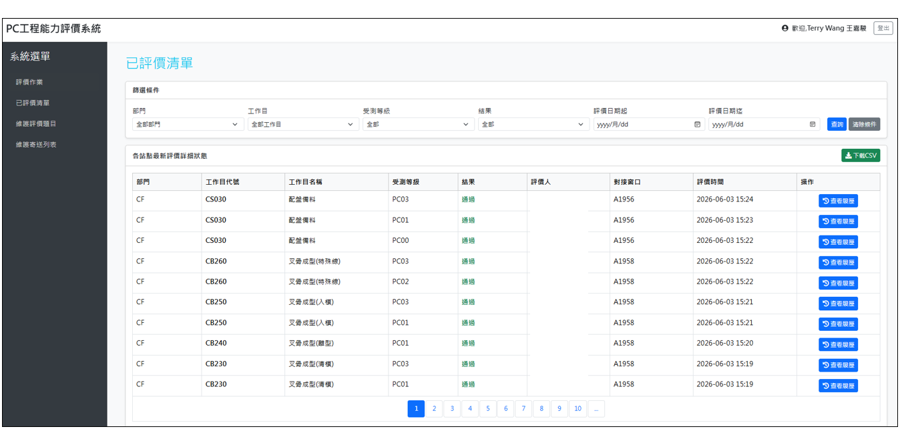
描述：將工作中心的能力考核流程全面數位化，提升評鑑客觀性與效率。
Description: Fully digitized the competence assessment process for engineering station, improving efficiency.
Web Application, Data Analytics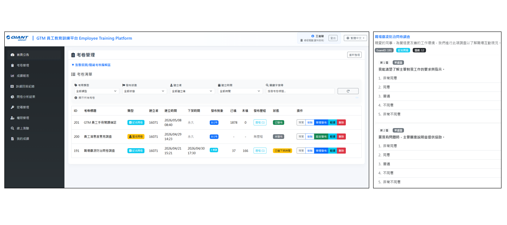
描述：建立規章制度管理稽核機制，確保員工訓練落實與合規。
Description: Established an audit mechanism for regulations management to ensure training compliance.
Compliance Audit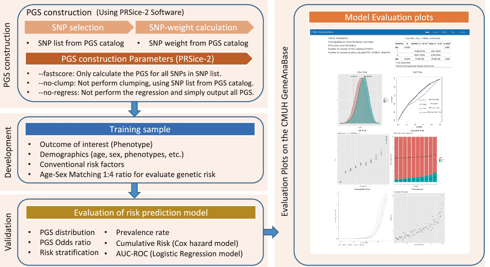
描述：預測 457 種表型遺傳易感性，實現個人化預防醫療。
Description: Predicted 457 phenotypic genetic susceptibilities for personalized preventive medicine.
Nature Communications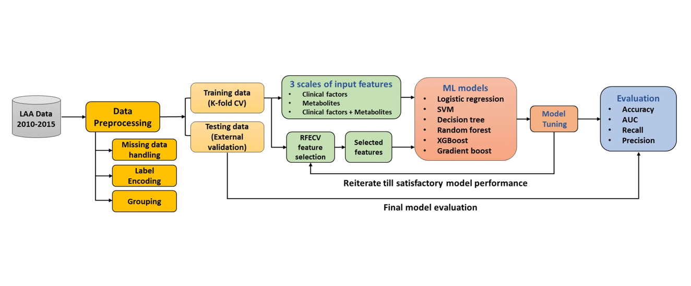
描述：分析大動脈粥樣硬化數據，構建 AUC 0.93 之預測模型。
Description: Analyzed Large Artery Atherosclerosis data, building a prediction model with AUC 0.93.
Scientific Reports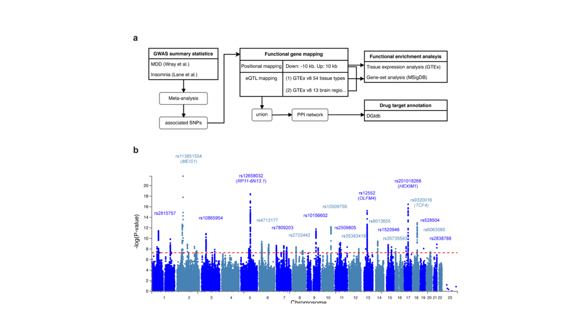
描述：透過 GWAS 薈萃分析與 eQTL 映射，找出 719 個憂鬱症與失眠共病的關鍵基因與生物路徑。
Description: Identified 719 shared genes and pathways between MDD and insomnia using GWAS meta-analysis and eQTL mapping.
Genes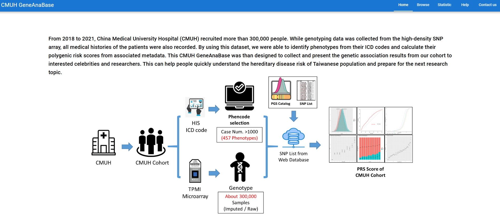
描述：部署整合基因與臨床數據的查詢系統，提供醫師風險評分參考。
Description: Deployed a query system integrating genetic and clinical data on Azure for physicians.
Platform Link